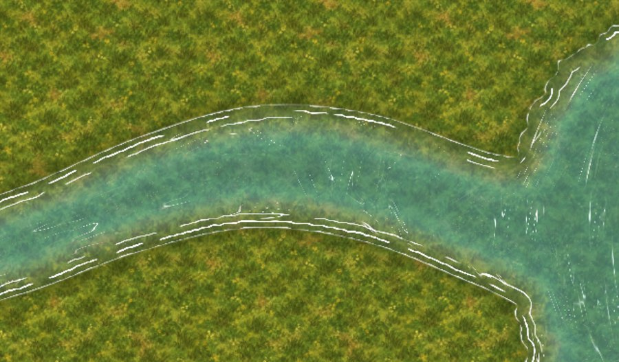
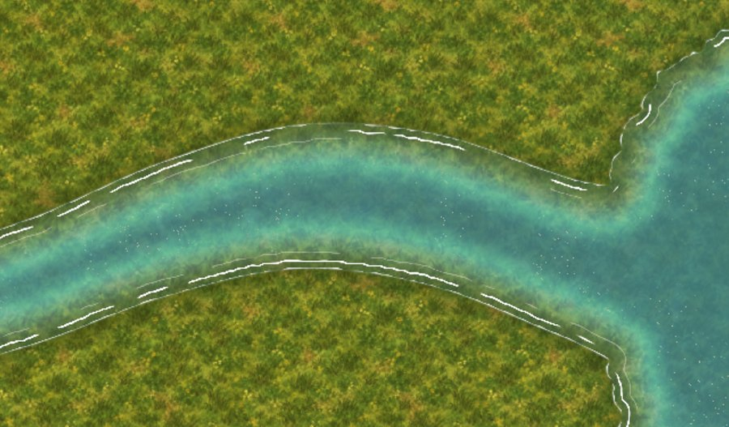
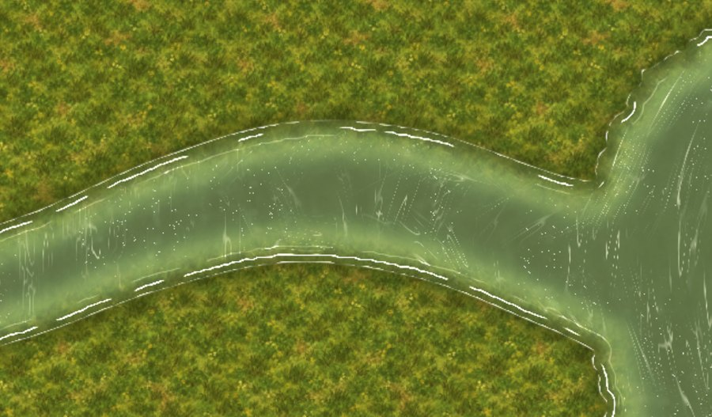
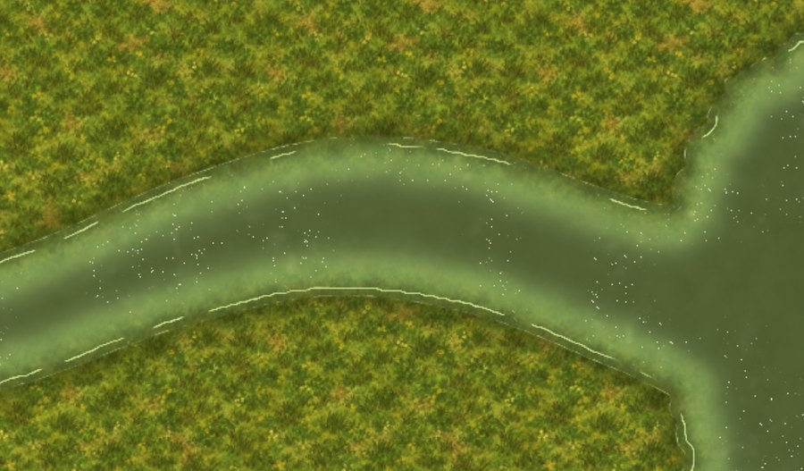
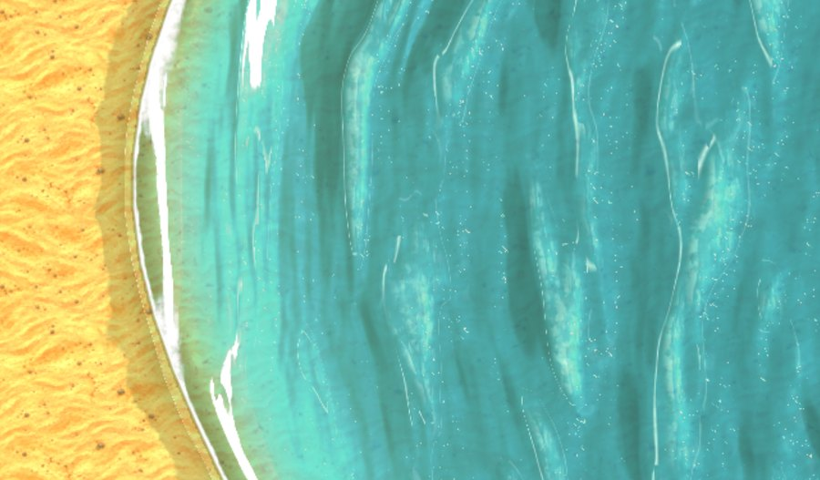
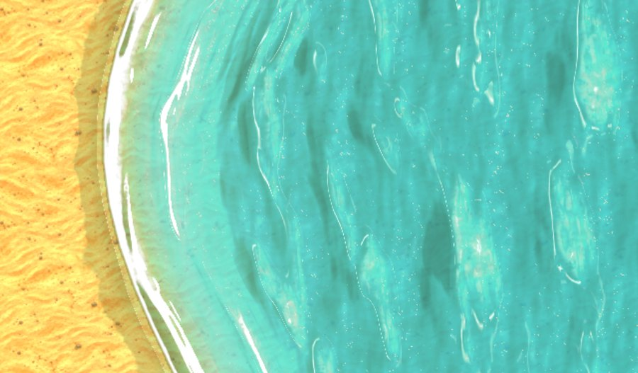
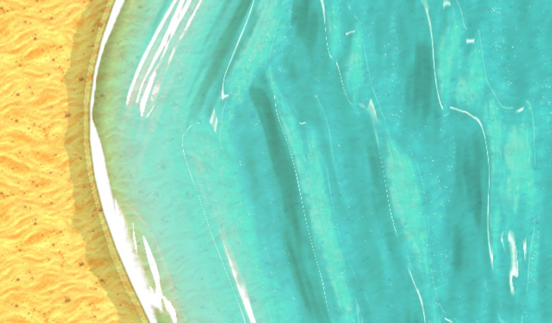
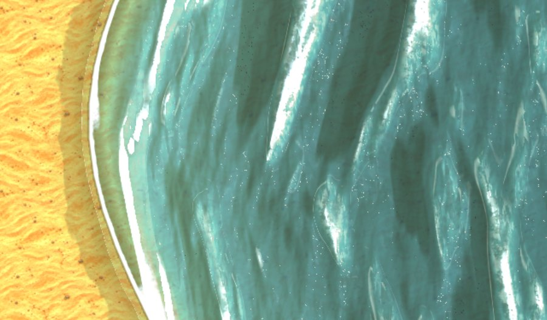
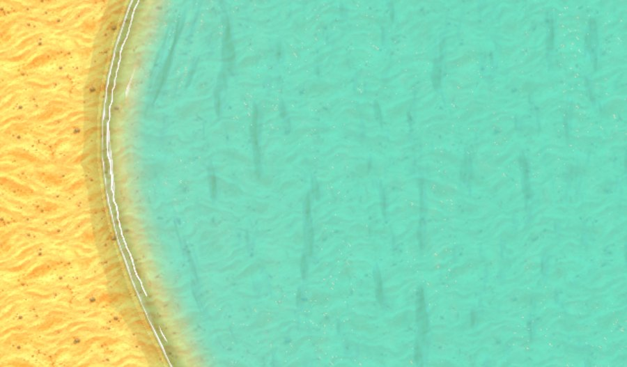
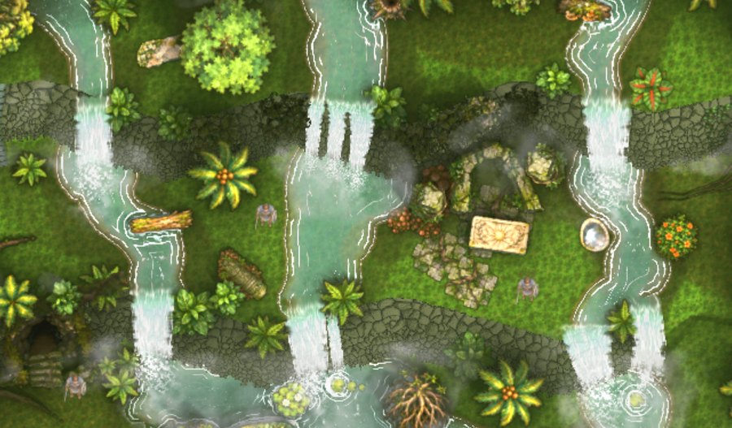

Using Ink Hammer
Water, the sea and waterfalls
Rivers, ponds, swamps and the sea are water layers you paint. Waterfalls form where water runs over a cliff. Everything here takes the sun and lamps.
Painting water
- Pick the Paint tool (B) and click the water button under Add a paint layer for a new water layer, or pick an existing one in Layers.
- Left-drag paints water, right-drag takes it away. [ and ] change the brush size.
- Select the water layer to see its settings in Properties. Pick a look... at the top sets them all at once; Save look... keeps your own.
- Banks get a wet edge, a band of light shallows and brush-stroke ripples on their own. The middle stays deep.
Water looks New in 0.9.24
Every look in Pick a look..., on grass or sand with the afternoon sun from the top left. Rivers and streams flow; lakes, swamps and still water do not. The sea looks share one painted style.









Rivers and flow New in 0.9.24
- Flowing water shows which way it runs: light streaks and tone along the current, also on wide slow rivers.
- Properties > Flow: Flows toward (deg), Speed (0 is still water) and Flow lines.
- Floating things and rocks in the water get foam around them, and Wake length sets how far their wake trails downstream.
The sea
- The quickest sea is Tools > Specialized > Ocean & coast: the sea, its beach and its seabed along one side of the map in one go. Its Sea look changes a sea already made.
- A sea layer's own settings are in Properties > Ocean: Waves toward (the wind; the arrow buttons set it to a map edge), Surf, Wave crests, Swell, Chop, Whitecaps, Tide line and Wet sand reach for the beach.
- Waves keep their direction past ships, logs and rocks, and a ship's wake fades into dashes behind it. New in 0.9.24
Waterfalls

- From water over a cliff: paint the water across a cliff's top edge onto its face, then press Generate waterfalls in the water layer's Properties. A fall forms wherever the water goes over: its lip on the cliff's top line, its foot at the cliff's foot. Water that stops partway down turns to mist. Press it again after you repaint.
- On its own: Tools > Specialized > Waterfall. Click the lip, then where it lands (more clicks bend it).
- Falls take the colour of the water they pour into. Pick your own colour in Properties; Match the water puts it back. New in 0.9.24
- Their sides break into falling strands, and the water rolls bright over the lip. New in 0.9.24
- A rock placed in a fall sits in the water: the water slides over its lower part and foams round its dry top.
Spills over a cliff
Where water runs over a long cliff edge it spills as a sheet. The white water where it lands has a smooth, broken edge, and rocks in the spill show through the water with white streaks. Spills take Opacity and Tint in Properties. New in 0.9.24
Tips
- Water is drawn on the graphics card. On a slow laptop, switch off Anim among the speed switches at the top right: moving water and torch flicker stop while you work. Exports are still pictures either way. See Speed switches.